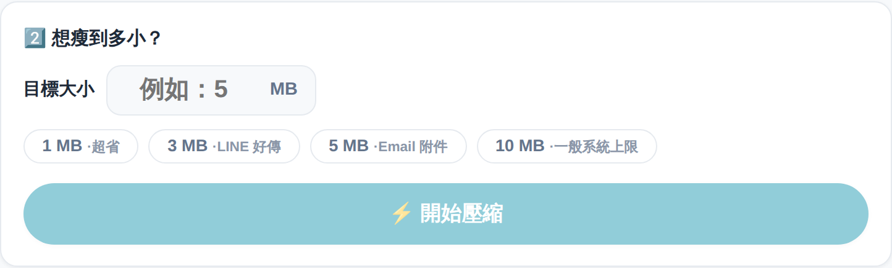
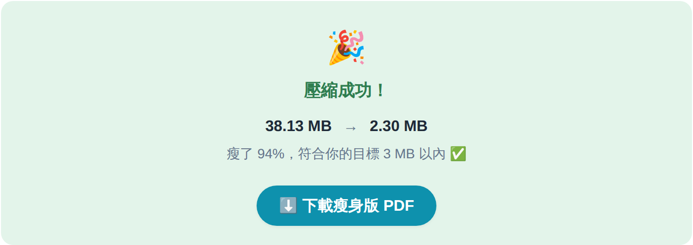

你有沒有過這種時刻：一份 PDF 要上傳，系統跳出一行紅字「檔案不得超過 10MB」。偏偏你那份 31MB。
報名表、投稿、上傳作業、寄給客戶——每次都卡在這關。網路上壓縮工具一大堆，但多半要嘛把檔案傳到別人的伺服器，要嘛壓完糊得看不清楚，要嘛只能「壓一點點」，沒辦法讓我說「我就是要壓到 5MB 以內」。
這件事本身不難，但它一直來。這一期，我把它收拾掉了。
前陣子我在網路上滑到一段影片：有人用 Manus 做了一個小程式叫「嘟嘟厚 PDF」。介面乾乾淨淨——把 PDF 丟進去、輸入你要的目標大小、按一下，就精準壓到那個數字以內。畫面上還特別寫著一句「100% 本地運算，個資絕對不離線」。
我看著那個畫面，心裡冒出一句很熟悉的話：「這個我也很需要，我也想要一個一模一樣的。」於是我決定，自己動手做一個。
以前的我看到這種東西，反應是「好厲害，可惜我不會寫程式」。現在的我反應是「先看清楚它在做哪幾件事，然後把需求講清楚，讓 AI 幫我做出來」。這中間的轉變，就是這一年我一直在練的事。
我在網路上看到的版本，是要下載、要安裝的。我想做的，是一個打開網頁就能用的——不挑系統、不用裝、一個網址就能傳給別人。
同樣一個需求，載體選對了，能用的人就從「一個人」變成「所有人」。這是我這次最開心的一個決定。
整個工具我把它收斂成三個動作，白話到不用教：

那個「目標大小」欄位，其實是整個工具最聰明的地方。它背後用的是一個叫二分搜尋的老方法。
工具準備一整排畫質階梯，反覆試：太大就往下降一階、還有空間就往上升一階，幾輪之內就框到「符合你要的大小、又最清晰」的那一階。
所以你只要負責講出一個數字，剩下的邏輯它自己跑。你出需求，程式出力氣。
我拿一份 38MB 的測試 PDF，設定目標 3MB，按下開始，幾秒後畫面就跳出這個：

瘦了 94%，穩穩落在 3MB 以內 · 頁數一頁不少
我看到的那款 App 強調檔案不上傳，這一點我完全同意，而且對我來說是紅線。我教的是機關單位、帶的是社大學員，大家要壓的常常是有個資的公文、名冊、報表。
所以我的網頁版一樣全程在你自己的瀏覽器裡運算，檔案不會上傳到任何地方。你甚至可以把網路關掉再壓，照樣能用。壓完的檔案，只在你自己電腦裡。
天下沒有白吃的午餐。這種壓縮的原理，是把 PDF 的每一頁重新拍成一張清晰照片，再裝回一份新的 PDF。
好處是壓縮效果很強、看起來幾乎一樣。代價是：瘦身版的文字不能再反白複製、也不適合再編輯，因為它已經變成「圖」了。
所以我在工具裡老實寫了一句提醒：拿去上傳系統、寄信、繳交，剛剛好；之後還要動的檔案，請留著原始版。把限制講在前面，比事後被抱怨好。
這個工具已經上線，收進我的「TARSHAR 工具集」了——那是我跟 AI 一起做的免費線上工具箱，每一樣都是「單一用途、點進來就能完成一件事」的小工具，現在收錄第 14 樣。
👉 打開 PDF 瘦身機來壓一份看到別人做的好東西，「我也想要」不必停在羨慕。你不用會寫程式，你要練的是另一件事：把那個東西拆開看——它在幫使用者完成哪一件事？中間有哪幾步？然後把這件事清清楚楚交代給 AI。
網路上那位不認識的人給了我靈感，AI 給了我手，我做的是那個最關鍵、也最像人的部分：決定要做什麼、為誰做、做成什麼樣子。仿作不丟臉，能把看到的好點子變成自己也用得上、還能分享出去的東西，這本身就是一種本事。
Tarshar，淡江 EMBA 資管研究生，AI 課程講師。在經營「🍀Learn AI with Tarshar」，記錄一個非工程師怎麼把 AI 變成日常隊友，把重複繁瑣、吃掉時間的事交出去，把時間留給真正重要的人和事。